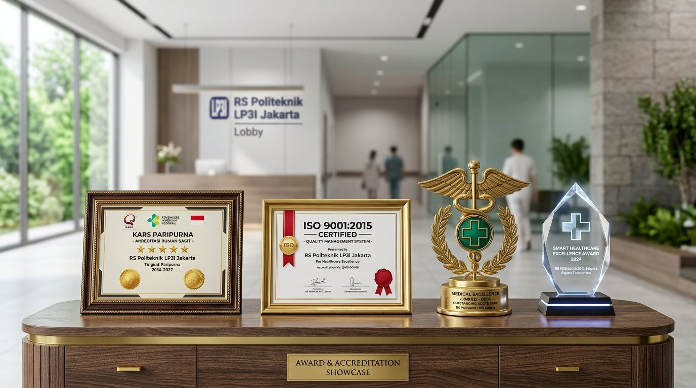

Kesehatan Terbaik Anda
Prioritas Utama Kami
Selamat datang di Rumah Sakit Politeknik LP3I Jakarta. Nikmati kemudahan akses reservasi poliklinik online, mesin antrean fisik mandiri 1-klik di lobi, pemantauan kuota dokter real-time, serta penanganan gawat darurat (IGD) 24 jam dengan standar Akreditasi Paripurna KARS.
Pusat Layanan Cepat Pasien
Akses langsung ke modul pelayanan terpadu RS Politeknik LP3I Jakarta
Daftar Rawat Jalan Online
Pilih dokter, pantau kuota live, dan dapatkan E-Tiket antrean digital resmi ber-QR Code.
Mesin Antrean Kiosk (1-Klik)
Cetak struk antrean fisik langsung di lobi rumah sakit dengan 1-klik untuk pasien walk-in.
Gawat Darurat & IGD 24 Jam
Panggilan ambulans darurat, panduan triase penanganan kritis, dan lokasi IGD Gedung A.
Layar TV Antrean Pasien
Pantau nomor antrean yang sedang dipanggil di ruang tunggu beserta panggilan suara.
Poliklinik Spesialis RS Politeknik LP3I
Pilihan klinik rawat jalan dengan fasilitas medis modern dan tenaga ahli profesional
Dokter Spesialis & Tim Ahli Medis
Didukung oleh para dokter spesialis terpercaya lulusan fakultas kedokteran terkemuka, siap memberikan pelayanan konsultasi, diagnosa akurat, dan terapi medis terbaik untuk Anda dan keluarga.

dr. Nasril Al-Farabi, M.Kes
Dokter Umum & Layanan Primer

drg. Amanda Putri, Sp.KG
Spesialis Konservasi Gigi

dr. Budi Santoso, Sp.A
Spesialis Anak & Pediatri

dr. Citra Lestari, Sp.PD
Spesialis Penyakit Dalam

dr. Eko Prasetyo, Sp.M
Spesialis Mata & Oftalmologi
Akreditasi & Sertifikasi Mutu Medis
Komitmen konsisten RS Politeknik LP3I Jakarta dalam menerapkan tata kelola klinis berstandar Paripurna (Bintang 5) dari KARS RI dan kepatuhan sistem manajemen mutu internasional ISO 9001:2015.
Pengakuan Tertinggi Mutu & Keselamatan Pasien KARS RI
Dianugerahi oleh Komisi Akreditasi Rumah Sakit (KARS) dan Kementerian Kesehatan RI atas konsistensi penerapan keselamatan pasien, pencegahan infeksi, dan integrasi rekam medis pintar.
